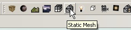
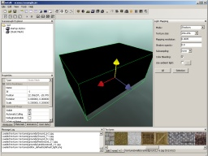
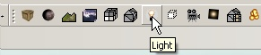
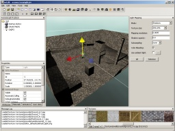
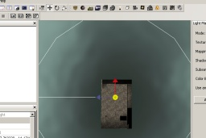
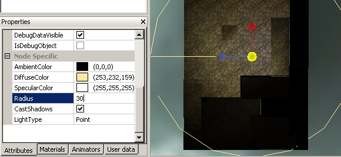
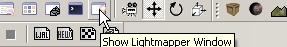
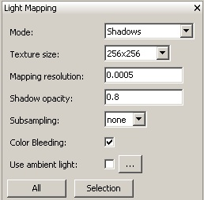
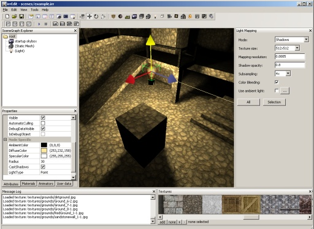
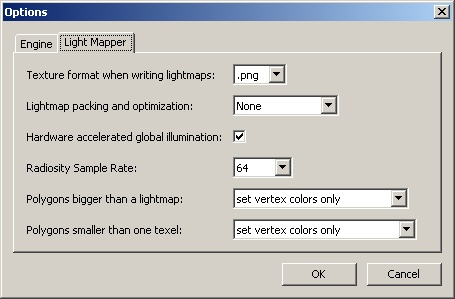

irrEdit light mapping tutorialThis short tutorial will explain how to calculate light maps using irrEdit. Start up irrEdit and add a static mesh to the scene. Using the toolbar item or the Menu "Edit->Insert->Static Mesh":  Select any mesh of the supported file types. If you don't have a mesh available, you can use the one in the irrEdit directory under \meshes. Once you added the mesh, you might want to modify its properties and materials, because maybe it looks like on the picture below and is very dark because there is no light in the scene yet.  But this doesn't matter at all, you can just leave it as it is.  The inserted light is a point light. The white circle drawn around it marks its light radius. Maybe your scene will instantly get a bit lighter, depending on the type of mesh you added before. But this doesn't matter either. 
Using the arrows displayed next to the selected light, move it somewhere into the room. To make this process a bit more simple, you can use F1, F2, F3 and F4 to change the perspective and view where you are moving the light exactly, if you like. The perspective can also be changed by the 4 corresponding buttons on the tool bar.  When the light is still selected, the property window will show its properties. Take a closer look at the properties 'Diffuse Color' and 'Radius' (they are a bit below, in the section 'node specific'). Change 'radius' to a big bigger value and select another diffuse color. Notice that the radius and the color of the light will change in the 3D view.
 Now change to the perspective view again (Press F1) and select the static mesh. Open the lightmapper window if not visible yet, using the tool bar or the menu under 'View -> Show Lightmapper Window'.  If it wasn't visible yet, a new window 'Light mapping' will pop up on the right with several options. Just hit the button 'Selection', which will calculate lightmaps for the selected mesh scene node only. If you have more than one mesh in your scene, 'All' will calculate lightmaps for all scene nodes if they are set to receive static light. But just hit 'Selection' now in that window.  A message box will pop up with the text "The selected mesh scene node is not set to receive lightning and/or shadows, do you want this to be done now? (You can do this manually at the 'user data' tab of the properties window of that scene node)". Just hit 'OK' and the light maps will be calculated. The result may look like this:  Nice, you created your first light mapped mesh. If you don't like the result, add some more lights, move them, change some of the parameters and hit 'Select' or 'All' again. Here is a short overview over the adjustable values in the light mapper window:
When saving your calculated scenes, please note that irrEdit will write a new mesh for each calculated mesh, usually in COLLADA file format, replacing the extension of the original mesh with '.dae'. In addition, the calculated light map textures will be stored in a folder where the mesh resides, named +".lightmaps". For example if you imported a mesh 'meshes/room.3ds', irrEdit will save the modified mesh as 'meshes/room.dae' and its lightmaps in the folder 'meshes/room.dae.lightmaps' with the names 1.png, 2.png and so on. There is also the option to change the texture format the lightmaps are stored as:  You can reach that options dialog via the menu command 'Tools->Options'. Happy lightmapping! |